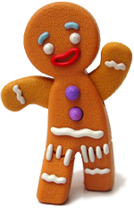

Doris
Doris es una de las antiguas camareras de Cenicienta en la Manzana Envenenada. Tiene una voz masculina profunda y un maquillaje similar al de una drag queen, que incluye sombra de ojos azul y cejas prominentes

Jengi
El Hombre de Jengibre, también llamado "Jengi", es una galleta de jengibre que fue horneada por Jero el Pastelero. Él es un aliado de Shrek y un personaje de apoyo en las películas de la saga Shrek.
